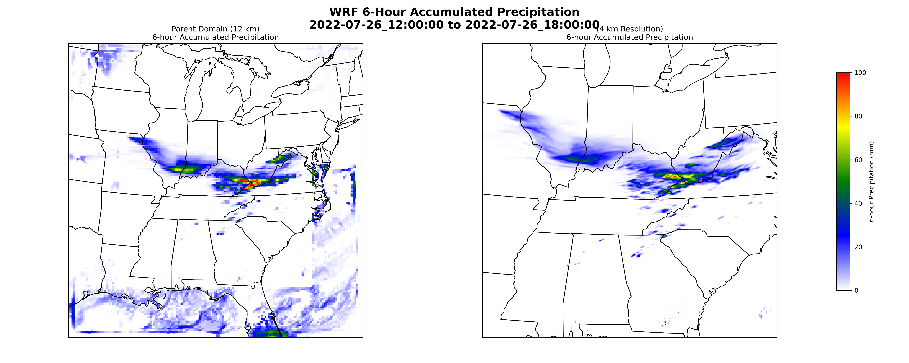
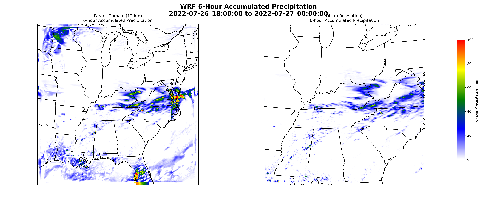
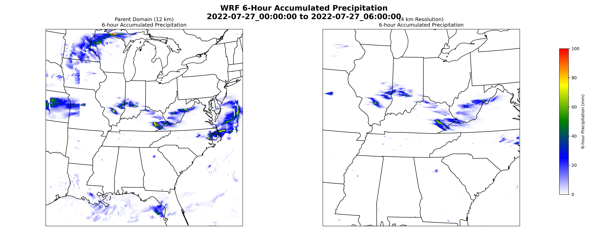

Abstract
A high-impact flash-flood event on July 26–27, 2022 devastated parts of Kentucky, West Virginia, and Virginia — producing catastrophic rainfall, washed-out bridges, inundated homes, and multiple fatalities. The city of Huntington, WV recorded its wettest July on record (239 mm). This study configured the WRF model v4.7.1 with ERA5 reanalysis data and a two-domain nested setup (12 km outer and 4 km convection-permitting inner domain) to simulate the event. Simulated precipitation was verified against NOAA Stage IV observations using pixel-to-pixel spatial comparisons and quantitative metrics. Results showed moderate daily agreement (R = 0.65, R² = 0.42), demonstrating WRF's capability and limitations in capturing short-duration, high-intensity Appalachian flood rainfall.
1. Event Overview & Motivation
The Central Appalachian region is particularly vulnerable to flash flooding due to its complex terrain, which enhances orographic lifting and channels runoff into narrow valleys. On July 26–27, 2022, a devastating series of flash floods swept across eastern Kentucky, West Virginia, and southwestern Virginia. In Mingo and McDowell Counties (WV), homes were submerged and bridges washed out, triggering multiple state-of-emergency declarations.
The event featured slow-moving, training convective cells, strong moisture advection from the Gulf of Mexico, and persistent low-level jet interaction with complex Appalachian terrain — ideal conditions for testing a convection-permitting model. This project applied end-to-end WRF modeling skills: domain design, physics parameterization, HPC execution on NCAR Derecho, and objective verification.
2. Model Configuration
Domain Design
A two-way nested domain was centered over the Ohio/Kentucky region using Lambert Conformal Conic projection (true latitudes 30°N / 60°N, central longitude −85°W):
| Domain | Resolution | Grid Size | Convection |
|---|---|---|---|
| D01 (Parent) | 12 km | 181 × 181 | Kain–Fritsch scheme |
| D02 (Nest) | 4 km | 361 × 361 | Explicit (no cumulus) |
Vertical grid: 41 terrain-following η-levels, model top at 5 hPa. Timestep: 60 s (D01) / 20 s (D02). Integration period: 2022-07-26 00 UTC → 2022-07-28 00 UTC.
Physics Parameterization
| Process | Scheme |
|---|---|
| Microphysics | WSM6 (mp_physics = 8) |
| Longwave Radiation | RRTMG (ra_lw_physics = 4) |
| Shortwave Radiation | RRTMG (ra_sw_physics = 4) |
| Surface Layer | Monin–Obukhov (sf_sfclay_physics = 1) |
| Land Surface | Noah LSM (sf_surface_physics = 2) |
| Boundary Layer | YSU (bl_pbl_physics = 1) |
| Cumulus | Kain–Fritsch on D01 only; explicit on D02 |
Forcing Data & Preprocessing
Initial and lateral boundary conditions from ERA5 (0.25° × 0.25°, hourly,
137 hybrid-sigma levels). ERA5 fields were converted to WPS intermediate format using the
NCAR-recommended era5_to_int.py
script — ensuring correct handling of hybrid-sigma levels, soil fields, and pressure level
reconstruction. Geogrid and Metgrid completed with NCAR WPS_GEOG static data.
The simulation ran on NCAR Derecho supercomputer using
64 MPI tasks across 4 compute nodes, completing successfully:
d01 2022-07-28_00:00:00 wrf: SUCCESS COMPLETE WRF
3. Storm Evolution — 6-Hour Precipitation Fields
The 6-hourly accumulated precipitation fields from both domains capture the lifecycle of a long-lived, west-to-east mesoscale convective system (MCS) responsible for the Appalachian flooding. D02 at 4 km consistently resolved sharper gradients, narrower convective cores, and more realistic rainfall organization compared to the 12-km parent domain.
Fig 1 — 00–06 UTC, July 26: Initial convective development over NE Missouri and western Illinois. D02 resolves a narrow, elongated band extending SE; D01 shows broader but less intense structure. Cores >100 mm/6 hr.

Fig 2 — 12–18 UTC, July 26: Convective band broadens to SW–NE orientation across Kentucky, Virginia, and West Virginia. D02 maintains a narrower axis of intense elements while D01 shows a wider, more diffuse band.

Fig 3 — 18 UTC Jul 26 – 00 UTC Jul 27: Lead-up to peak flooding in eastern Kentucky. D02 produces frequent, intense localized bursts. Several heavy pockets appear in SE Kentucky and W. West Virginia — consistent with maximum hydrometeorological stress.

Fig 4 — 00–06 UTC, July 27: Temporary weakening and disorganization as the system lulls before re-intensification. D02 shows isolated, weaker cells while D01 depicts broader but low-intensity precipitation shield.
4. Synoptic & Mesoscale 850-hPa Environment
The 850-hPa temperature, wind, and sea-level pressure (SLP) fields reveal the synoptic environment that sustained 36+ hours of continuous convection:
00 UTC July 26 — Setup
A distinct baroclinic zone separated cooler air (~12–18°C) over the Great Lakes from warmer air (~24–30°C) across Missouri, Kentucky, and Tennessee. Southwesterly low-level flow was already transporting warm, moist air into the Ohio Valley along a weak surface trough (1010–1014 hPa).
06–12 UTC July 26 — Intensification
Thermal gradient sharpened; warm 850-hPa air (27–33°C) expanded NE into Kentucky. Domain 2 resolved the strengthening southwesterly low-level jet. A SW–NE oriented SLP trough extended into Kentucky/WV, supporting persistent low-level inflow into the developing convection.
18 UTC Jul 26 – 00 UTC Jul 27 — Peak Flooding Phase
Warm 850-hPa temperatures (27–33°C) persisted across southern Kentucky. Subtle semi-closed SLP contours indicated slow progression of the synoptic disturbance — maintaining a persistent environment for continuous moisture transport into Appalachian terrain. This period aligns with the peak simulated rainfall intensities.
12–18 UTC July 27 — Decay
Baroclinic zone shifted eastward; temperatures cooled to 18–24°C through eastern Kentucky. Wind speeds weakened, SLP contours became diffuse, reflecting the breakdown of organized synoptic and mesoscale support after 36 hours of back-building convection.
5. Verification Against NOAA Stage IV
Daily accumulated precipitation on July 26 from the D02 (4-km) domain was compared to NOAA Stage IV multi-sensor rainfall analysis — the operational gauge-corrected radar product used as the ground truth for quantitative precipitation verification.

Fig 5 — Daily Verification (July 26, 2022): (a) NOAA Stage IV observed rainfall; (b) WRF D02 simulated rainfall; (c) WRF – Stage IV bias map (positive = overestimate); (d) Pixel-to-pixel scatterplot with 1:1 reference line. WRF correctly reproduces the SW–NE rainband orientation but overestimates peak intensities.
Verification Metrics — July 26
The correlation of R = 0.65 indicates moderate skill — particularly notable given the complex Appalachian terrain, the narrow high-gradient rainband, and the 4-km grid spacing. The scatterplot shows dense clustering below 40 mm where WRF matches observations well, with increasing scatter at higher intensities reflecting the model's tendency to over-predict peak convective rainfall.
The positive bias (+2.0 mm) and widespread positive bias shading in the bias map (central Kentucky and West Virginia) reflect over-amplified convective cores in D02 — a known limitation of convection-permitting simulations at 4 km when orographic enhancement interacts with a back-building MCS.
6. Conclusions
This study demonstrates that WRF with a 4-km convection-permitting nest and ERA5 boundary conditions successfully reproduces the mesoscale organization, orientation, and timing of the July 26–27, 2022 Central Appalachian flood event. The two-way nested configuration allowed D02 to resolve the narrow convective band structure and localized rainfall maxima that the coarser D01 domain smoothed over.
Key findings:
- WRF correctly captured the SW–NE rainband orientation and general placement of the convective system
- The 4-km domain over-predicted peak rainfall intensities by a factor of ~1.5–2× in the highest-impact zones
- The synoptic environment — quasi-stationary baroclinic zone, southwesterly low-level jet, slow-moving SLP trough — was well-reproduced in both domains
- The moderate R = 0.65 skill score is encouraging for a single deterministic run without data assimilation over complex terrain
- The WPS intermediate-file method for ERA5 ingestion performed reliably on NCAR Derecho